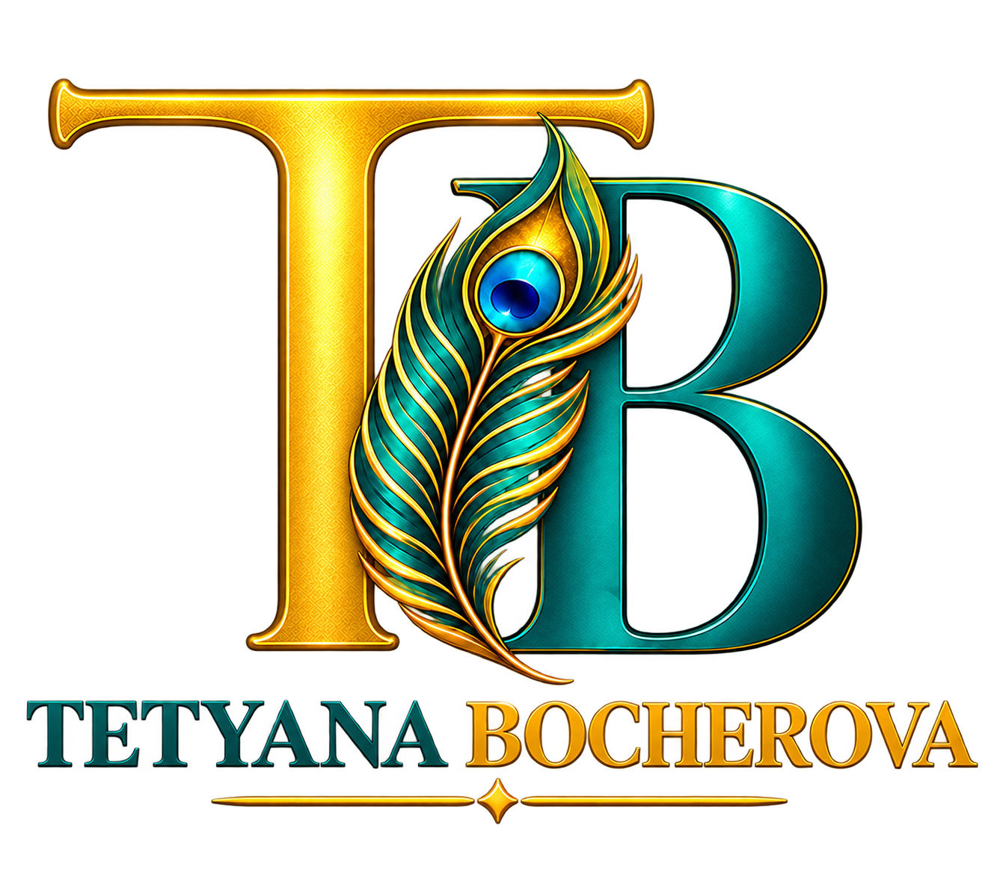

Hi! My name is Tetyana.
I am currently enrolled in CIS 047 taught at San José City College.
I am originally from Ukraine, and I currently live in San Jose, California.
My interests include UX/UI design, web development, hiking, chess and ballroom dancing.
I hope to learn how to create clear, accessible, and well-structured websites.